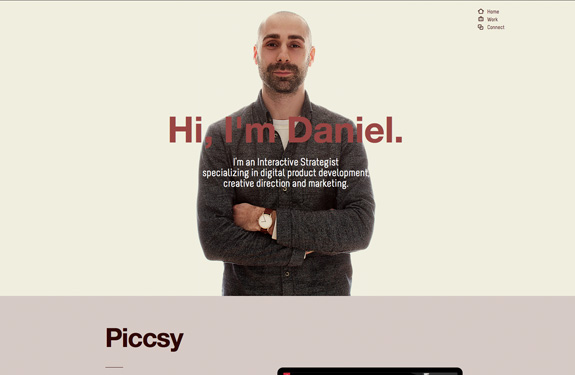

Daniel Eckler est un entrepreneur spécialisé en dévéloppement de produits numeriques, direction créative et marketing. Son site portfolio ne s'affiche pas bien mais sa devrait ressember à l'image ci-dessous. Grace à son site j'ai pu choisie la couleur, le métaphore et la forme de ma page home.

Derek Boateng est un artiste et designeur qui réside à Londre. Sa partie about (profile) m'a inspiré à faire le mien. Il y avait une belle séparation entre les informations.je me suis basé sur sa pour faire une bio, une partie pour les reseaux sociaux et le footer.
Adam Hartwig est un designeur Anglais. j'ai tellement aimé son site. Mais La maniére dont il a presenté sa navigation m'a inspiré à faire le mien.